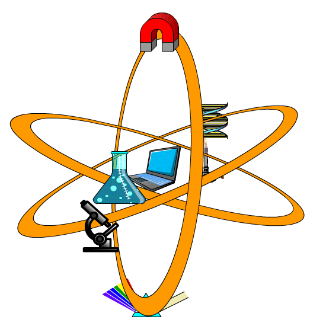
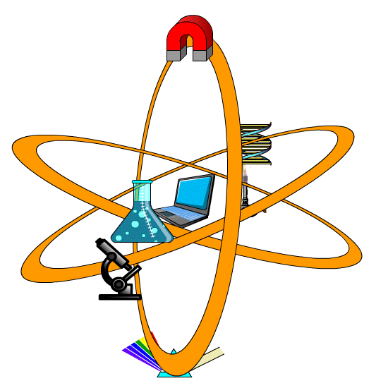

Mr. Montgomery's Site Map
- Mr. Montgomery Profile Card
- BCHS Logos and Graphics
- Graphics, School Logos, Gryphon, Jaguar, etc... Link
- CTS - Career & Technology Studies
- Goolge Classroom Header Images
- Google Classroom Header Images, 1000 wide 25 high Link
- HTML Tests
- HTML, Javascript and CSS examples Link
- Interactive Elements
- Labs and interactive activities from different courses. Programmed in Javascript Link
Science 10
Bohr Model
Animal Cell Organelles
Plant Cell Organelles
Microscope Parts
Toy Train Velocity
Physics 20
Projectile Motion Canon
Physics 30
Momentum Linear
Electric Field
Lens Ray Converging
Lens Ray Diverging
Mirror
Refraction
Science 20
Organic Moledule Builder
Science 30
Heart Parts
- Math 8
- Math 10C
- Unit 1 Measurement
- Chapter 1: Measurement Systems Link
- 1.1 SI Measurement
- 1.2 Imperial Measurment
- 1.3 Converting Between SI and Imperial Measurement
- Chapter 2: Surface Area and Volume Link
- 2.1 Units of Area and Volume
- 2.2 Surface Area
- 2.3 Volume
- Chapter 3: Right Triagnle Trigonometry Link
- 3.1 The Tangent Ratio
- 3.2 The Sine and Cosine Ratio
- 3.3 Solving Right Triangles
- Unit 2 Algebra and Number
- Chapter 4: Exponents and Powers Link
4.1 Square Roots and Roots
- 4.2 Integral Exponents
- 4.3 Rational Exponents
- 4.4 Irrational Exponents
- Chapter 5: Polynomials Link
- 5.1 Multiplying Polynomials
- 5.2 Common Factors
- 5.3 Factoring Trinomials
- 5.4 Factoring Special Trinomials
- Unit 3 Relations and Functions
- Chapter 6: Lineaer Relations Link
- 6.1 Graphs and Relations
- 6.2 Linear Relations
- 6.3 Domain and Range
- 6.4 Functions
- 6.5 Slope
- Chapter 7: Linear Equations and Graphs Link
- 7.1 Slope Intercept Form
- 7.2 General Form
- 7.3 Slope Point Form
- 7.4 Parallel and Perpendicular
- Unit 4 Systems of Equations
- Chapter 8: Solving Systems of Linear Equations Graphically Link
- 8.1 Systems of Linear Equations and Graphs
- 8.2 Modelling and Solving Linear Systems
- 8.3 Number of Solutions for Systems of Linear Equations
- Chapter 9: Solving Systems of Linear Equations Algebraically Link
- 9.1 Solving Systems of Linear Equations by Substitution
- 9.2 Solving Systems of Linear Equations by Elimination
- 9.3 Solving Problems Using Systems of Linear Equations
- Math 30-1
- Chapter 1 & 3 Videos Link
- Math Images
- Images for Math classes - Link
- Physics 20
- Unit 1: Kinematics
- Chapter 1: Acceleration Link
- 1.1 The Language of Motion
- 1.2 Position-time Graphs and Uniform Motion
- 1.3 Velocity-time Graphs: Uniform and Non-uniform Motion
- 1.4 Analyzing Velocity-time Graphs
- 1.5 The Kinematics Equations
- 1.6 Acceleration due to Gravity
- Chapter 2: Vectors Link
- 2.1 Vector Methods in One Dimension
- 2.2 Motion in Two Dimensions
- 2.3 Relative Motion
- 2.4 Projectile Motion
- Unit 2: Dynamics
- Chapter 3: Forces Link
- 3.1 The Nature of Force
- 3.2 Newton's First Law
- 3.3 Newton's Second Law
- 3.4 Newton's Third Law
- 3.5 Friction Affects Motion
- Chapter 4: Gravity Link
- 4.1 Graviational Forces due to Earth
- 4.2 Newton's Law of Universal Gravitation
- 4.3 Relating Graviational Field Strength to Graviational Force
- Unit 3: Circular Motion, Work and Energy
- Chapter 5: Newton's Laws Can Explain Circular Motion Link
- 5.1 Defining Circular Motion
- 5.2 Circular Motion and Newton's Laws
- 5.3 Satellites and CelestialBodies in Circular Motion
- Chapter 6: In an Isolated System, Energy is Transferred From One Object to Another Whenever Work is Done Link
- 6.1 Work and Energy
- 6.2 Mechanical Energy
- 6.3 Mechanical Energy in Isolated and Non-isolated Systems
- 6.4 Work and Power
- Unit 4: Oscillatory Motion and Mechanical Waves
- Chapter 7: Oscillatory Motion Requires a Set of Conditions Link
- 7.1 Period and Frequency
- 7.2 Simple Harmonic Motion
- 7.3 Position, Velocity, Acceleration, and Time Relationships
- 7.4 Applications of Simple Harmonic Motion
- Chapter 8: Mechanical Waves Transmit energy in a Variety of Ways Link
- 8.1 The Properties of Waves
- 8.2 transverse and Longitudinal Waves
- 8.3 Superposition and Interference
- 8.4 The Doppler Effect
- Physics 30
- Unit 5: Momentum and Impulse
- Chapter 9: The momentum of an isolated system of interacting objects is conserved Link
- 9.1 Momentum Is Mass Times Velocity
- 9.2 Impulse Is Equivalent to a Change in Momentum
- 9.3 Collisions in One Dimension
- 9.4 Collisions in Two Dimensions
- Unit 6: Forces and Fields
- Chapter 10: Physics laws can explain the behaviour of electric charges Link
- 10.1 Electrical Interactions
- 10.2 Coulomb’s Law
- Chapter 11: Electric field theory describes electrical phenomena Link
- 11.1 Forces and Fields
- 11.2 Electric Field Lines and Electric Potential
- 11.3 Electrical Interactions and the Law of Conservation of Energy
- Chapter 12: Properties of electric and magnetic fields apply in nature and technology Link
- 12.1 Magnetic Forces and Fields
- 12.2 Current-carrying Conductors and Magnetic Fields
- 12.3 Electrical Interactions and the Law of Conservation of Energy
- 12.4 Magnetic Fields, Moving Charges, and New and Old Technologies
- Unit 7: Electromagnetic Radiation
- Chapter 13: The wave model can be used to describe the characteristics of electromagnetic radiation Link
- 13.1 What Is Electromagnetic Radiation?
- 13.2 The Speed of Electromagnetic Radiation
- 13.3 Reflection
- 13.4 Refraction
- 13.5 Diffraction and Interference
- Chapter 14: In an Isolated System, Energy is Transferred From One Object to Another Whenever Work is Done Link
- 14.1 The Birth of the Quantum
- 14.2 The Photoelectric Effect
- 14.3 The Compton Effect
- 14.4 Matter Waves and the Power of Symmetric Thinking
- 14.5 Coming to Terms with Wave particle Duality and the Birth of Quantum Mechanics
- Unit 8: Atomic Physics
- Chapter 15: Electric force and energy quantization determine atomic structure Link
- 15.1 The Discovery of the Electron
- 15.2 Quantization of Charge
- 15.3 The Discovery of the Nucleus
- 15.4 The Bohr Model of the Atom
- 15.5 The Quantum Model of the Atom
- Chapter 16: Nuclear reactions are among the most powerful energy sources in nature Link
- 16.1 The Nucleus
- 16.2 Radioactive Decay
- 16.3 Radioactive Decay Rates
- 16.4 Fission and Fusion
- Chapter 17: The development of models of the structure of matter is ongoing Link
- 17.1 Detecting and Measuring Subatomic Particles
- 17.2 Quantum Theory and the Discovery of New Particles
- 17.3 Probing the Structure of Matter
- 17.4 Quarks and the Standard Model
- Science 10
- Unit A: Energy and Matter in Chemical Change
- Chapter 1: The Understanding The Particles Make Up The Underlying Structure of Matter has Led To Advancements In Technology Link
- 1.1 Safetly in the Laboratory
- 1.2 Properties and Classification of Matter
- 1.3 Developing Ideas about Matter
- Chapter 2: Elements combine to form many substances, each with its own set of properties. Link
- 2.1 The Periodic Table and Atomic Structure
- 2.2 Naming Ionic and Molecular Compounds
- 2.3 Properties and Classification of Ionic and Molecular Compounds
- 2.4 Acids and Bases
- 2.5 Our Chemical Society
- Chapter 3: Chemical change is a process that involves recombining atoms and energy flows Link
- 3.1 Important Examples of Chemical Change
- 3.2 Writing Chemical Equations
- 3.3 Five Common Types of Chemical Reactions
- 3.4 The Mole
- Unit B: Energy Flow in Technological Systems
- Chapter 1: Investigating the energy flow in technological systems requires an understanding of motion, work, and energy Link
- 1.1 Motion
- 1.2 Velocity
- 1.3 Acceleration
- 1.4 Work and Energy
- Chapter 2: Energy in mechanical systems can be described both numerically and graphically Link
- 2.1 Forms of Energy
- 2.2 Potential Energy
- 2.3 Kinetic Energy and Motion
- 2.4 Mechanical Energy
- 2.5 Energy Conversions
- Chapter 3: Principles of energy conservation and thermodynamics can be used to describe the efficiency of energy transformations Link
- 3.1 Laws of Thermodynamics
- 3.2 The Development of Engine Technology
- 3.3 Useful Energy and Efficiency
- 3.4 Energy Applications
- Unit C: Cycling of Matter in Living Systems
- Chapter 1: Our current understanding of the cell is due in part to developments in imaging technology Link
- 1.1 A Window on a New World
- 1.2 Development of the Cell Theory
- 1.3 Developments in Imaging Technology and Staining Techniques
- 1.4 Cell Research at the Molecular Level
- Chapter 2: Living systems are dependent upon the functioning of cell structures and organelles Link
- 2.1 The Cell as an Efficient, Open System
- 2.2 The Role of the Cell Membrane in Transport
- 2.3 Applications of Cellular Transport in Industry and Medicine
- 2.4 Is Bigger Better?
- Chapter 3: Plants are multicellular organisms with specialized structures Link
- 3.1 Cells, Tissues, and Systems
- 3.2 The Leaf and Photosynthesis
- 3.3 The Leaf Tissues and Gas Exchange
- 3.4 Transport in Plants
- 3.5 Control Systems
- Unit D: Energy Flow in Global Systems
- Chapter 1: Climate results from interactions among the components of the biosphere Link
- 1.1 Earth—Our Biosphere
- 1.2 Climate
- Chapter 2: Global systems transfer energy through the biosphere Link
- 2.1 Energy Relationships and the Biosphere
- 2.2 Thermal Energy Transfer in the Atmosphere
- 2.3 Thermal Energy Transfer in the Hydrosphere
- 2.4 Earth’s Biomes
- 2.5 Analyzing Energy Flow in Global Systems
- Chapter 3: Changes in global energy transfer could cause climate change, and impact human life and the biosphere Link
- 3.1 Climate Change—Examining the Evidence
- 3.2 International Collaboration on Climate Change
- 3.3 Assessing the Impacts of Climate Change
- Science 20
- Science 24
- Science 30
- Unit A: Maintaining Health
- Chapter 1: Circulation and Immunity Link
- 1.1 The Heart
- 1.2 Blood Vessels
- 1.3 Blood
- 1.4 Cardiovascular Disease and Disorders
- 1.5 The Immune System
- Chapter 2: Genetics Link
- 2.1 What is Genetics?
- 2.2 Inheritance
- 2.3 DNA
- 2.4 Mutations and Genetic Diseases
- 2.5 Genetic Technologies
- Unit B: Chemistry and the Environment
- Chapter 1: Acid Deposition Link
- 1.1 Products of Combustion Reactions
- 1.2 Chemistry of Acids and Bases
- 2.3 Impact of Acid Depositio Ecosystems
- 1.4 Quantifying Acid Deposition and Monitoring Its Effects
- 1.5 Learning from Acid Deposition
- Chapter 2: The Chemical Legacy of Human Activity Link
- 2.1 Organic Compounds
- 2.2 Alcohols, Carboxylic Acids and Esters
- 2.3 Understanding Exposure
- Unit C: Electromagnetic Energy
- Chapter 1: Electric and Magnetic Fields Link
- 1.1 Field Lines
- 1.2 Equations for Fields
- 1.3 Motors and Generators
- 1.4 Electric Circuits
- 1.5 Transmitting Electrical Energy
- Chapter 2: The Electromagnetic Spectrum Link
- 2.1 Electromagnetic Radiation
- 2.2 Astronomy
- Unit D: Energy and the Environment
- Chapter 1: Dreams of Limitless Energy Link
- 1.1 Energy on Demand
- 1.2 Solar Fuel from the Past
- 1.3 Harvesting Chemical Energy
- 1.4 Harvesting Nuclear Energy
- Chapter 2: Dreams of a Sustainable Future Link
- 2.1 Describing Sustainability
- 2.2 The Many Forms of Solar Energy
- Site Map
 
